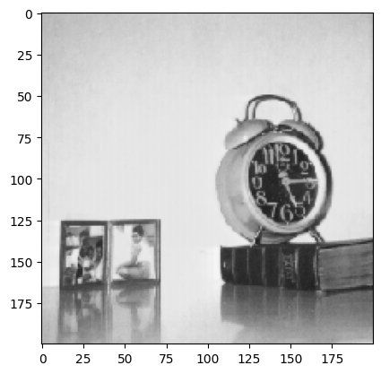
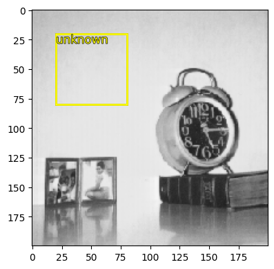
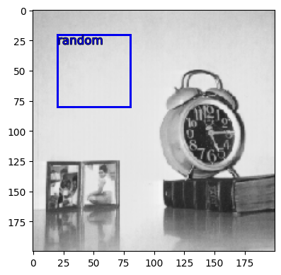
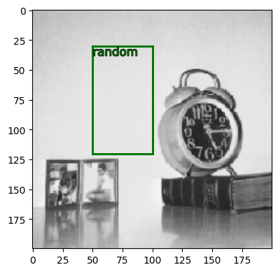
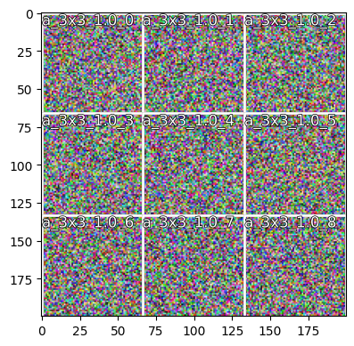
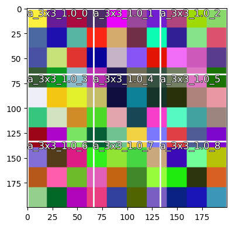
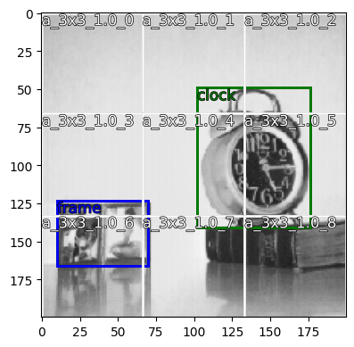
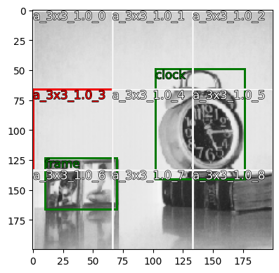

image_sz = (200, 200)
im, ann, lgt, clr = get_example(image_sz=image_sz, pth="../data", img_fn="image.jpg")Visualizations
Visualize stacks of bounding boxes, raw records, target annotations, and model logits.
Loading from disk
Load a sample image from the data directory ../data/image.jpg and resize to (200, 200). Original image size is (256, 256).
im is the image of a clock and a frame, ann are the annotations for the image in json format, lgt are logits (activations from a layer) which can be displayed on top of the image, clr is a dict representing the colors to use for the different annotation keys.
ann, lgt, clr([{'x_min': 102, 'y_min': 49, 'x_max': 176, 'y_max': 141, 'label': 'clock'},
{'x_min': 10, 'y_min': 123, 'x_max': 70, 'y_max': 166, 'label': 'frame'}],
None,
{'frame': 'blue', 'clock': 'green'})_, _, plt = _require_matplotlib()
_ = plt.imshow(im)
Store the annotations as a MultiBx object.
get_bx(ann)MultiBx(coords: 2, labels: 2)draw
def draw(
img:ndarray, bbox:list, logits:NoneType=None, alpha:float=0.4, **kwargs
):Method to draw an image, box and logits overlayed if passed. :param img: the image array, expects a numpy array :param bbox: list of bounding boxes in json format :param logits: activations that should be overlayed from a neural network (no checks) :param kwargs: kwargs for draw_boxes() :param alpha: same as alpha for matplotlib :return: current axis
draw_boxes
def draw_boxes(
img:ndarray, bbox:list, title:NoneType=None, ax:NoneType=None, figsize:tuple=(5, 4), color:str='yellow',
no_ticks:bool=False, xo:int=0, yo:int=0, squeeze:bool=False, verbose:bool=False, **kwargs
):Method to draw bounding boxes in an image, can handle multiple bboxes :param figsize: sige of figure :param img: the image array, expects a numpy array :param bbox: list of bounding boxes in json format :param title: image title :param ax: which axis if already present :param yo: y offset for placement of text :param xo: x offset for placement of text :param color: text color or dict of colors for each label as a dict :param no_ticks: whether to set axis ticks off :param squeeze: squeeze axis :return: ax with image
draw_rectangle
def draw_rectangle(
ax, coords, color:str='white'
):Draw a rectangle using matplotlib patch. :param ax: axis :param coords: coordinates in coco format :param color: text color :return: ax object
draw_text
def draw_text(
ax, xy:tuple, label:str, size:int=12, color:str='white', xo:int=0, yo:int=0
):Write text around boxes. :param ax: axis object :param xy: relative ax coordinates x, y to draw the text :param label: label for box :param size: font size :param yo: y offset for placement of text :param xo: x offset for placement of text :param color: text color :return: ax object
get_color
def get_color(
color, label:NoneType=None, default_color:str='white'
):Get colors from color dict for a given label. If label=None, return default_color. :param color: dict of key, value pairs where key is label, value is color :param label: the label for which color is needed :param default_color: :return: str that contains color
draw_outline
def draw_outline(
obj, linewidth:int
):Make outlines around to object edges for visibility in light backgrounds :param obj: plt objects like text or rectangle :param linewidth: width of the stroke :return: plt object
Drawing random box by passing coordinates as a list.
draw(im, [[20, 20, 80, 80]], verbose=True)[20, 20, 80, 80]
Drawing random box by passing coordinates as a list along with label.
draw(im, [[20, 20, 80, 80, "random"]], color={"random": "blue"})
draw(
im,
[{"x_min": 50, "y_min": 30, "x_max": 100, "y_max": 120, "label": "random"}],
color={"random": "green"},
)
To display the calculated anchor boxes or any other type of bounding boxes, pybx offers the vis.VisBx class. First, vis.VisBx initializes all the params for the image and loads its annotations (if available). Upon calling the show() method on the instantiated VisBx object with our predicted annotations or anchor boxes, everything gets displayed.
VisBx
def VisBx(
image_arr:NoneType=None, image_sz:NoneType=None, sample:bool=False, **kwargs
):VisBx is used to visualize the bounding boxes. The image on of which the bounding boxes are to be drawn can be instantiated with VisBx() if needed. Calling the show() method of the VisBx() instance accepts bounding box coordinates and labels that are to be shown. The boxes can be provided as any of the internal objects (MultiBx, BaseBx, …) or as any other raw format accepted by the internal objects.
Displaying image array and annotations object: This is the default approach used by VisBx(). If no arguments are passed, a tuple denoting the size for random noise random_img_sz=(100, 100, 1) is expected. Some arguments: :param image_arr: image array of shape (H, W, C). If None, it is set to a random noise image of image_sz=(100,100,3) by default. :param annots: annotations is any accepted format (see above).
Displaying from image and annotations file: To load and display the image, set sample=True. Some argmuments: :param ann_fn: annotations file name, default annots.json :param img_fn: image file name, default image.jpg :param load_ann: whether to load ann_fn or just the img_fn. If False, an empty annotations dict is returned: dict(zip(voc_keys, [0, 0, 1, 1, ''])) :param pth: path to find ann_fn and img_fn, default . :param image_sz: size to resize the loaded image a different size (annotations scaled automatically)
Common parameters: :param color: A dict of color can be passed to assign specific color to a specific label in the image: color = {'frame': 'blue', 'clock': 'green'} :param logits: Logits as ndarray that should be overlayed on top of the image or bool to generate random logits. :param feature_sz: Feature size to generate random logits if logits is not None.
Display image array (default behaviour)
To display an image array (shape of W, H, C) directly, instead of loading from disk, pass an ndarray to the image_arr argument. If available, also provide the annots in any supported format. Displaying calculated anchors with a random image:
image_sz(200, 200)anchor_boxes, anchor_labels = bx(image_sz, 3, 1)anchor_boxes(#9) [[0, 0, 66, 66],[66, 0, 133, 66],[133, 0, 200, 66],[0, 66, 66, 133],[66, 66, 133, 133],[133, 66, 200, 133],[0, 133, 66, 200],[66, 133, 133, 200],[133, 133, 200, 200]]v = VisBx(image_arr=np.random.random((*image_sz, 3)))
# a 200x200 image is used to overlay the anchor boxes in a 3x3 grid
v.show(anchor_boxes, anchor_labels)
Can also print out the boxes being plotted with verbose.
v.show(anchor_boxes, anchor_labels, verbose=True)BaseBx(coords=[[0, 0, 66, 66]], label=['a_3x3_1.0_0'])
BaseBx(coords=[[66, 0, 133, 66]], label=['a_3x3_1.0_1'])
BaseBx(coords=[[133, 0, 200, 66]], label=['a_3x3_1.0_2'])
BaseBx(coords=[[0, 66, 66, 133]], label=['a_3x3_1.0_3'])
BaseBx(coords=[[66, 66, 133, 133]], label=['a_3x3_1.0_4'])
BaseBx(coords=[[133, 66, 200, 133]], label=['a_3x3_1.0_5'])
BaseBx(coords=[[0, 133, 66, 200]], label=['a_3x3_1.0_6'])
BaseBx(coords=[[66, 133, 133, 200]], label=['a_3x3_1.0_7'])
BaseBx(coords=[[133, 133, 200, 200]], label=['a_3x3_1.0_8'])
v = VisBx(
image_arr=np.random.random((10, 10, 3)), image_sz=(*image_sz, 3)
) # a 10x10 random image will be resized to 200x200
v.show(anchor_boxes, anchor_labels)
Load image and show annots
Displaying calculated anchors with a sample image. The original annotations are also rescaled to match the image_sz.
v = VisBx(
pth="../data/", img_fn="image.jpg", image_sz=image_sz
) # annots.json is being read from ../data/annots.json
v.show(anchor_boxes, anchor_labels)
Customize colors
To customize the box colors, pass a dict color with the annotation name as key and color as value. In the example below an anchor box color is changed to red using its label a_3x3_1.0_3 along with the annotations provided read from file.
v.show(
anchor_boxes,
anchor_labels,
color={"a_3x3_1.0_3": "red", "frame": "green", "clock": "green"},
)